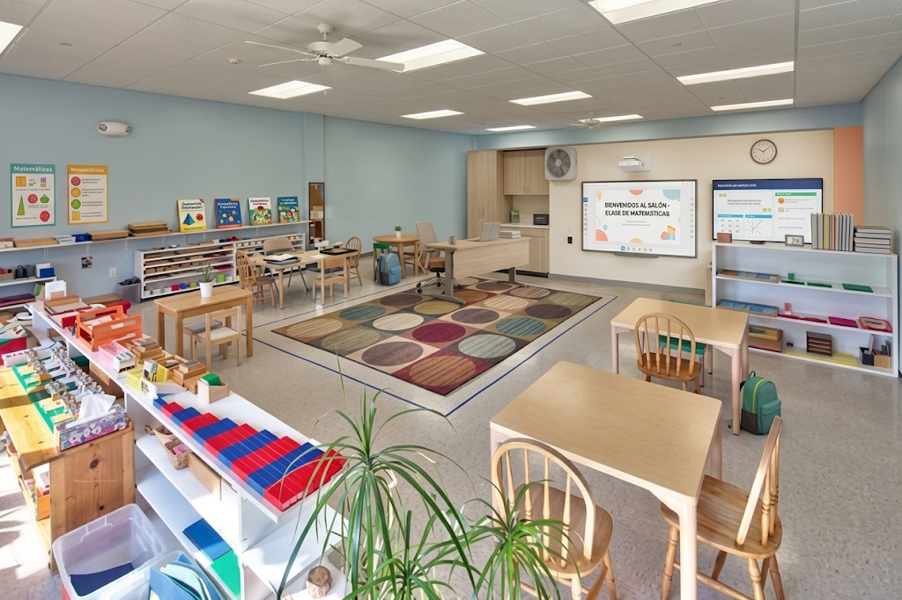

Quiénes somos
Montessiris Academy está basado en la metodología Montessori. Acompañamos a alumnos Montessori para que aprendan de una forma creativa, práctica, sin estrés excesivo para el desarrollo óptimo de habilidades.
Método educativo
El Método Montessori es una filosofía educativa diseñada por la médica italiana Maria Montessori a principios del siglo XX, basada en la premisa de que los niños aprenden de forma natural cuando se les da libertad dentro de un entorno preparado. En lugar de sentar a un niño en un escritorio a escuchar a un profesor durante horas, Montessori convierte al niño en el protagonista de su propio aprendizaje.

Misión
Buscar que todas las juventudes tengan educación, porque esta no es un privilegio, es un derecho. Teniendo en cuenta que no todos aprenden igual y que aun así hay que darle la oportunidad a todos. Buscamos un futuro lleno de personas que sepan resolver problemas cotidianos y que puedan pensar correctamente,logrando su independencia.
Visión
El 2030 es próximo,sin embargo nuestros logros pueden llegar en algunos años, el aprender no debería de ser aburrido y mucho menos para nuestras generaciones futuras, nuestros propios hijos, por esto, esperamos que montessiris progrese y que la gente en verdad se de cuenta de cómo los niños no son solo niños, son mentes que tienen la posibilidad de cambiar al mundo que deben ser escuchadas.
Formación
Creemos que todos los alumnos aprenden de manera diferente. La escuela no debería ser únicamente memorizar temas para aprobar un examen, sino motivar a los estudiantes a aprender porque realmente les entusiasma descubrir nuevos conocimientos.
Ofrecemos un colegio con un modelo educativo innovador y diferente para educación básica, donde los alumnos no aprenden memorizando o escribiendo en cuadernos. En Montessiris Academy buscamos que los estudiantes aprendan de manera más creativa, práctica y tranquila, integrando el uso de la tecnología, proyectos colaborativos y experiencias funcionales para la vida.
Además de:
- Clases dinámicas y creativas
- Aprendizaje mediante proyectos y actividades prácticas
- Orientación vocacional para alumnos de secundaria
- Actividades deportivas, artísticas y tecnológicas
- Acompañamiento para el desarrollo personal y académico
Costos
- Inscripción anual: $2000
- Contribuciones mensuales (primaria y secundaria): $300-700 (varía según el nivel socioeconómico)
- Descuento del 10% por hermanos inscritos
- Becas de hasta el 50% para alumnos de excelencia académica o deportiva